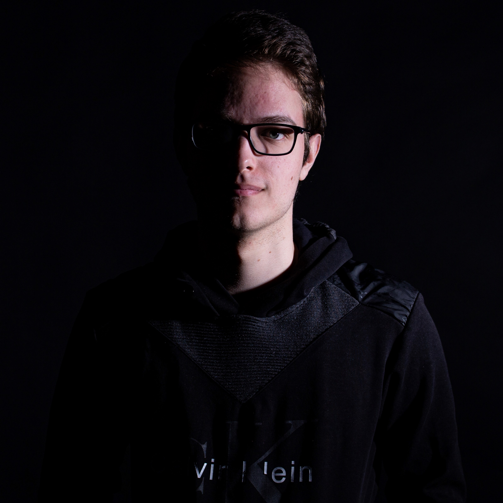

My passion and sth else

-
Ever since I can remember, I always loved solving logical tasks
-
That's why I always loved subjects like math and physics, and
later on I started to be interested in programming.
-
I was going on few competitions in basic programming which boosted
my interest in programing
-
I was still unsure of what I really want in the future. I was
interested in everything I was learning in school.
-
I wanted to have a wide spread of knowledge and also keep on
improving my programming skills – that’s why I chose to enroll
into a Gymnasium MIOC
Highschool life and decisions
-
There I met new friends who were very supportive and inspiring.
-
Because of their help and the great highschool course, I decided
that my main focus from now on should be programming.
-
I was really confident in my learning skills. I wanted to attend a
university that would be challenging for me
-
I decided to try out FESB (Faculty of Electrical Engineering,
Mechanical Engineering and Naval Architecture) --> it was not what
I expected...